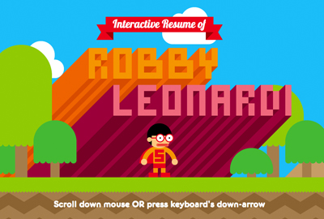

favorite
internet
thing.
—
 Sum Hing Carton Box Factory ⤢
Sum Hing Carton Box Factory ⤢http://boxx.hk
The site has very interesting transitions and link navigation system. The images are the site map that guide the users around, and each image shifts to the front when in hover state. Besides using just the images, text also appears on hover to further explain each selection.

Robby Leonardi Interactive Portfolio ⤢
http://www.rleonardi.com/interactive-resume/
This site is VERY interactive, inviting the viewers to use the arrow keys or scroll through the website. While scrolling, the fixed character moves as well to show movement throughout. It's almost as if the site is a mini game/video itself with all the transitions and animations.
http://www.rleonardi.com/interactive-resume/
This site is VERY interactive, inviting the viewers to use the arrow keys or scroll through the website. While scrolling, the fixed character moves as well to show movement throughout. It's almost as if the site is a mini game/video itself with all the transitions and animations.
 Interior Design by Decade ⤢
Interior Design by Decade ⤢https://www.harveywatersofteners.co.uk/history-interior-design
This website incorporates interesting page-scrolling animation to show the changes of interior design over time. The side navigation is also simple and easy to use besides direct scrolling. I love the simplicity of the web page, including the graphics as well as the information that is presented.
 Interior Design by Decade ⤢
Interior Design by Decade ⤢http://www.antro.ca/en/
This creative agency has a very modern and responsive design. Their side navigation is what caught my eye. With a very simple center aligned accordion, even on hover it auto center-align itself according to browser's height. It's simple yet very functional that has a great user interface.